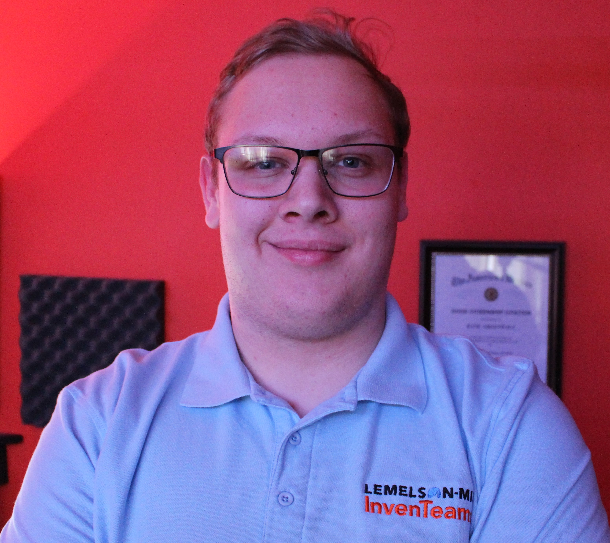

I am a very outgoing and determined person. I have worked in the IT Field ever since graduating from Davenport West Highschool.
- Education
-
Davenport West Highschool
- Skills
-
Team Managment
Managed many teams through projects through my time as the SecurePrint lead with HP.
IT Skills
Windows, Windows Management, IT Help Desk, Tier 1-3 Experience, DNS, SAP, SQL, Print, Windows Print Server, 3d Print
Programing Languages
(ALL ENTRY LEVEL) C#, C++, Java, Java Script, HTML
- Experience
-
HP
OSA and SecurePrint Lead for the John Deere Customer 08/01/2021 - Current
- Tier 1-3 work
- Windows Print Services
- Customer Relations
- Owning high level projects with Deere upper Managment
- 24/7 on Call rotation
- Making strategies on lifecyling Windows OS
Ascent Pro StaffERS agent 12/01/2020 - Current
- Customer Service
- Breakdown Information Gathering
- Client Relations
- Hobbies
- In my spare time I like to work on computers and 3d printers. I take time to Mentor Local FIRST robotics teams on 3d printing to give back to a program I so greatly benefited from.
- References
- Available on request